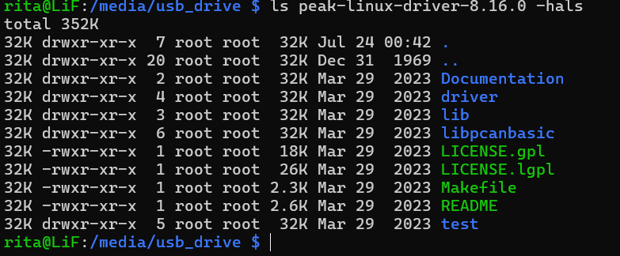

Installing libpcan on the Raspberry Pi
I downloaded the peak-linux-driver-8.16.0.tar archive from the course shell[1] and transferred it to the Raspberry Pi with
a USB flash drive. I used lsblk to list block devices and blkid to identify
the drive as /dev/sda1. I then mounted it under /media/usb_drive:
sudo mkdir -p /media/usb_drive
sudo mount /dev/sda1 /media/usb_drive
After mounting the drive, I could access the archive files.

I followed the archive's README and ran sudo make install, but the installation failed:
make[1]: Entering directory '/home/rita/peak-linux-driver-8.16.0/driver'
Info: Left current 'pcan'-entry in /etc/modprobe.d/pcan.conf untouched.
mkdir -p /usr/local/bin
cp -f udev/pcan_usb_minor_check.bash /usr/local/bin
chmod 744 /usr/local/bin/pcan_usb_minor_check.bash
cp -f udev/45-pcan.rules /etc/udev/rules.d
Info: Copied 45-pcan.rules to /etc/udev/rules.d.
cp -f udev/blacklist-peak.conf /etc/modprobe.d
chmod 644 /etc/modprobe.d/blacklist-peak.conf
Info: mainline drivers removed and blacklisted in
/etc/modprobe.d/blacklist-peak.conf
udevadm control --reload-rules
make[1]: *** No rule to make target 'pcan.ko', needed by 'install_module'. Stop.
make[1]: Leaving directory '/home/rita/peak-linux-driver-8.16.0/driver'
make: *** [Makefile:98: install] Error 2
The installer could not find the pcan.ko kernel module. I searched the PEAK forums without
finding a solution, then updated the system and installed the build dependencies:
sudo apt update
sudo apt full-upgrade
sudo apt install build-essential libpopt-dev linux-headers-rpi-2712
sudo reboot
I verified the running kernel and its header path:
uname -r
readlink -f /lib/modules/"$(uname -r)"/build
The same error remained. I cleaned and rebuilt the driver:
make clean
make -j"$(nproc)" # -j specifies the number of parallel compilation jobs.
This build failed with:
src/pcan_filter.c:29:10: fatal error: src/pcan_common.h: No such file or directory
I then consulted the PEAK-System Linux website[2]. The kernel configuration contained:
# CONFIG_CAN_PEAK_PCIEFD is not set
CONFIG_CAN_PEAK_USB=m
The disabled CONFIG_CAN_PEAK_PCIEFD option was not relevant because the project uses a PEAK
USB adapter rather than a PCIe FD device.
I also downloaded and ran PEAK's kernel-version-checking script[3], which reported:
Bus 001 Device 002: ID 0c72:000c PEAK System PCAN-USB needs Linux v3.4
I initially interpreted this result as a possible compatibility issue with the Raspberry Pi's Linux 6.18 kernel. I therefore downloaded the current driver release[4] and installed version 9.2.0:
# Download the current version.
wget -O peak-linux-driver.tar.gz https://www.peak-system.com/quick/PCAN-Linux-Driver
# Confirm that the archive was downloaded.
ls
# Extract and enter the archive directory.
tar -xzf peak-linux-driver.tar.gz
cd peak-linux-driver-9.2.0
# Build the driver.
make clean
make -j"$(nproc)"
# Confirm that the module was produced.
ls -l driver/pcan.ko
# Install the driver and regenerate module dependencies.
sudo make install
sudo depmod -a
# Load the new module.
sudo modprobe pcan
The new driver installed successfully, and I tested my C++ CAN library. The test revealed two issues:
- Declaring the CAN module as a global variable initialized it once, while a separate
CAN();expression insidemain()caused an unnecessary second construction. - During initialization, the status may be
0x20(CAN_ERR_QRCVEMPTY), which only indicates that the receive queue is empty. The code had incorrectly treated this status as a failure.
I fixed both issues and successfully transmitted ten test messages to the Elevator Controller.